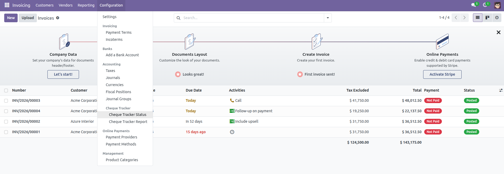
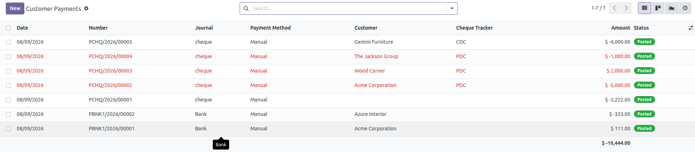
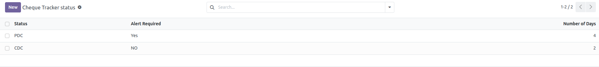
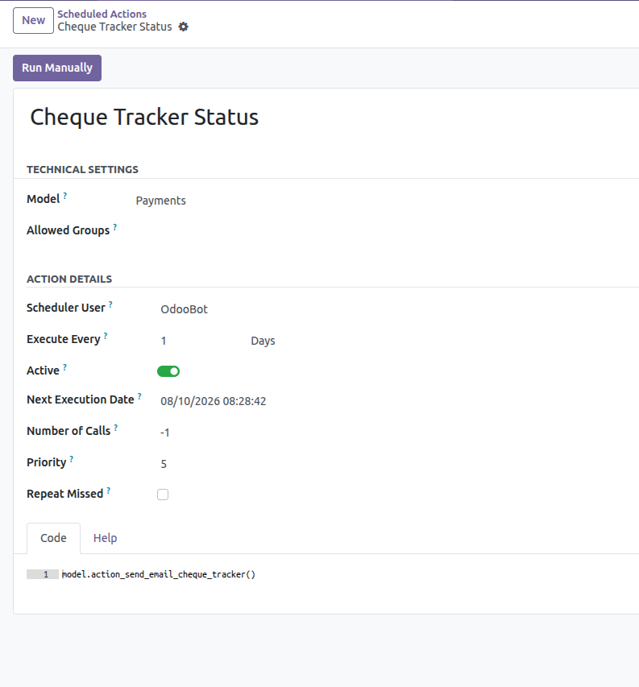
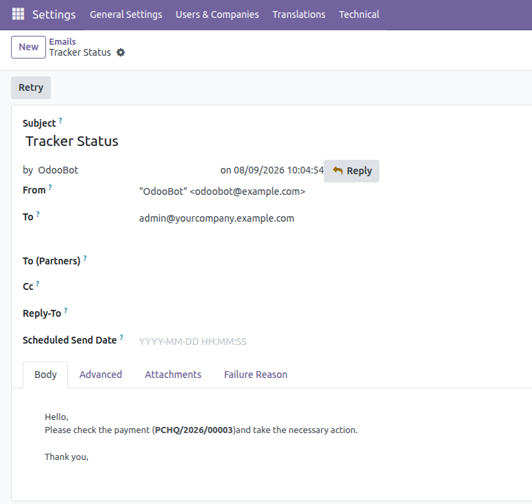
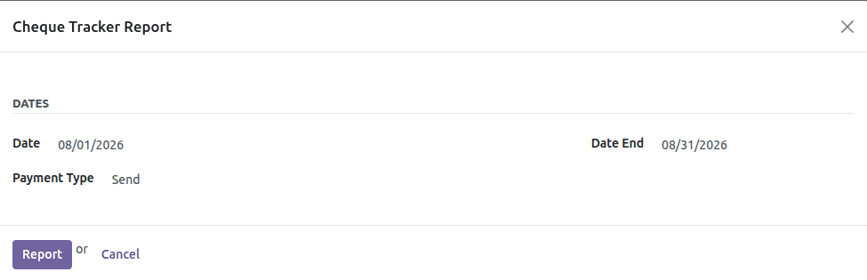
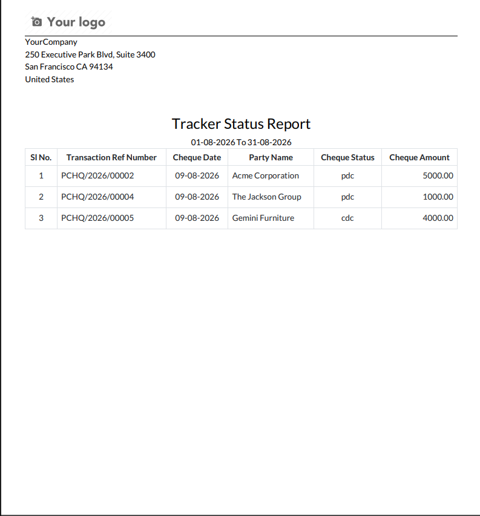

Cheque Tracker Status helps businesses track and manage cheque payments in Odoo Community with PDC/CDC status management, configurable alert periods, automated email notifications, and cheque tracking reports.
Access the Cheque Tracker features directly from the Accounting application. The module provides dedicated menus for cheque tracker configuration and reporting.

Cheque payments are clearly identified in the payment list with their journal, payment method, customer, cheque tracker status, amount, and payment status.

Configure the cheque tracker status according to your business requirements. The module supports both PDC and CDC statuses.
For each status, you can configure whether an alert is required and specify the number of days for the alert.

The module uses an Odoo scheduled action to automatically check cheque payments that require attention.
The scheduled action runs automatically at the configured interval, eliminating the need to manually check every cheque payment.

When a cheque reaches its configured alert period, the module can automatically send an email notification to accounting users and managers.
This helps the accounting team identify upcoming cheque dates and take the necessary action on time.

Generate a cheque tracker report using the built-in report wizard. Select the required date range and payment type before generating the report.

After selecting the required filters, generate a PDF report containing the cheque transaction details.

The module provides a simple workflow for managing cheque payments:
Install the module in your Odoo Community database and configure the cheque tracker statuses from the Accounting application.
After installation, navigate to:
Accounting → Configuration → Cheque Tracker
Configure the PDC/CDC statuses and alert settings before using the automated cheque tracking functionality.
AchaOdoo specializes in Odoo ERP development, customizations, integrations, technical consulting, and training. We build high-quality Odoo modules and share practical knowledge through tutorials, blogs, and courses to help businesses and developers succeed with Odoo.
Need assistance or have questions about this module?